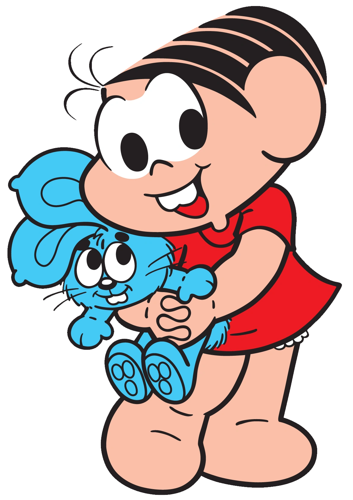
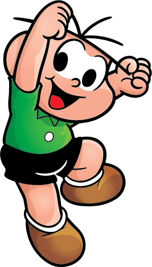
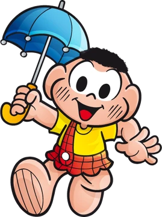
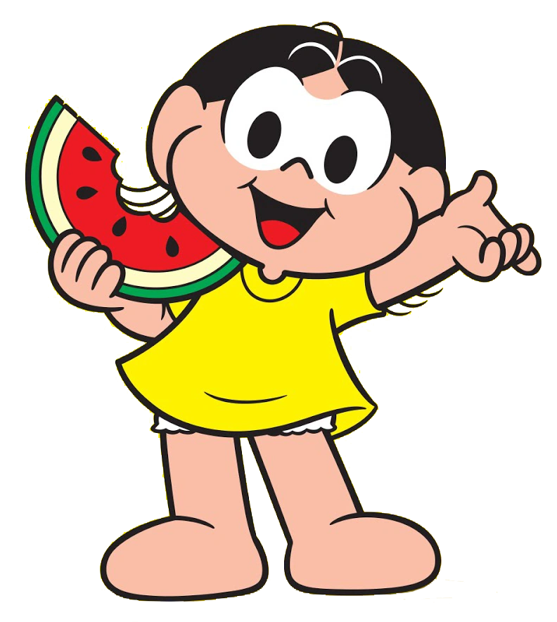
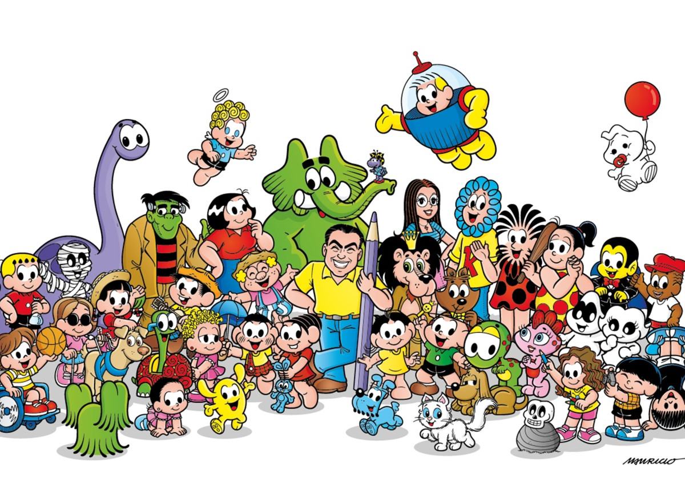

Mônica

Mônica é uma das principais personagens da turma. Conhecida por sua personalidade forte, coragem e determinação, ela também é a dona do famoso coelhinho Sansão.
Conheça os principais personagens do Bairro do Limoeiro!
A Turma da Mônica é uma das histórias em quadrinhos mais conhecidas do Brasil. Criada por Mauricio de Sousa, a turma acompanha as aventuras de crianças que vivem no famoso Bairro do Limoeiro.
Entre brincadeiras, confusões e muitas aventuras, Mônica, Cebolinha, Cascão, Magali e seus amigos conquistaram gerações de leitores.

Mônica é uma das principais personagens da turma. Conhecida por sua personalidade forte, coragem e determinação, ela também é a dona do famoso coelhinho Sansão.

Cebolinha é conhecido pelos seus cinco fios de cabelo e por seus planos para tentar derrotar a Mônica e se tornar o dono da rua.

Cascão é um dos melhores amigos do Cebolinha. Ele é conhecido principalmente por não gostar de tomar banho e por suas aventuras.

Magali é uma das melhores amigas da Mônica. Ela é conhecida pelo seu enorme apetite e principalmente por sua paixão por melancia.

O Bairro do Limoeiro é o principal cenário das aventuras da Turma da Mônica. É onde grande parte dos personagens vive e se encontra.
Sansão é o famoso coelhinho azul da Mônica. Ele aparece em diversas histórias e é um dos objetos mais importantes para a personagem.
Ao longo dos anos, a Turma da Mônica ganhou histórias em quadrinhos, desenhos animados, filmes, jogos e diversos outros produtos.
Esta página foi desenvolvida como um projeto de estudo de HTML semântico. Os elementos semânticos ajudam a organizar o conteúdo e tornam a estrutura da página mais clara para usuários, navegadores e tecnologias assistivas.